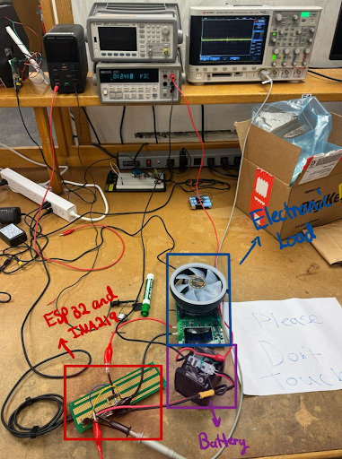

NASA JPL Mars Hard Lander – Avionics System
NASA JPL-Sponsored Senior Capstone Project
This capstone project, sponsored by NASA’s Jet Propulsion Laboratory (JPL), focused on developing a Mars hard lander avionics system capable of surviving high-G impact conditions while autonomously collecting, storing, and transmitting environmental data from the Martian surface.
My primary responsibilities focused on PCB development, power system testing, STM32H7 and STM32L4 firmware, and RTOS-based scheduling for communication and task coordination between the low-power controller and main processor.
System Architecture
The Mars Hard Lander avionics system combines power management, STM32-based processing, onboard sensing, storage, and communication into a compact embedded system designed for autonomous operation.
The finalized architecture is shown through the hardware and software system diagrams below.
Hardware Architecture
Shows the power distribution path, 1S9P Li-ion battery system, voltage rails, STM32L4 low-power controller, STM32H7 main processor, sensors, payloads, and PlutoSDR connection.

Software & Data Flow Architecture
Shows how the STM32L4 low-power scheduler coordinates with the STM32H7 main processor to collect sensor data, store data, transmit packets through PlutoSDR, and manage system behavior.

My Role & Responsibilities
PCB Designer
Worked on the final avionics PCB for the Mars Hard Lander system, including board integration, layout review, routing considerations, and hardware design verification.
Supported system-level integration between the PCB, sensors, power subsystem, and STM32-based control architecture.
Power System Test Engineer
Tested and validated the power subsystem, including the 1S9P Li-ion battery configuration, power distribution behavior, voltage regulation, and runtime performance.
Used current and voltage measurements to evaluate system stability under expected operating loads.
STM32 Firmware & RTOS
Worked on STM32H7 and STM32L4 firmware development and integration. The L4 acted as a low-power scheduler while the H7 handled higher-performance sensing, storage, and communication tasks.
Supported RTOS-based scheduling and task coordination between the L4 and H7.
1S9P Li-ion Battery & Power System Testing
The final power subsystem used a 1S9P Li-ion battery configuration designed to provide higher capacity while supporting the lander’s sensing, processing, storage, and communication tasks.
- Tested the 1S9P Li-ion battery configuration under expected system loads.
- Validated voltage regulation and power distribution behavior.
- Measured current and voltage to evaluate runtime and power stability.
- Supported system-level power testing and integration with the avionics board.

Final PCB, STM32 Firmware & RTOS Integration
I worked on the final avionics PCB and STM32 firmware integration for the Mars Hard Lander system. The system used STM32H7 and STM32L4 microcontrollers, where the L4 coordinated scheduled tasks and the H7 handled higher-performance operations.
- Contributed to final PCB layout, board integration, and validation.
- Worked on STM32H7 and STM32L4 firmware development.
- Implemented L4-to-H7 task scheduling and communication logic.
- Worked with RTOS scheduling for sensing, storage, and transmission tasks.

Testing & Validation
I contributed to subsystem and system-level testing to reduce electrical, firmware, and integration risks before final project delivery.
- Power subsystem testing using current and voltage measurements.
- Battery runtime and power stability validation.
- STM32H7 and STM32L4 firmware integration testing.
- RTOS scheduling verification for coordinated system tasks.
- System-level validation through PoC, CDR, and acceptance testing.
Finalized Engineering Report
The finalized report documents the complete avionics system architecture, subsystem integration, firmware development, power system testing, and mission validation results for the NASA JPL-sponsored Mars Hard Lander project.
- Avionics system architecture and integration
- STM32H7 and STM32L4 firmware development
- RTOS scheduling and L4-to-H7 task coordination
- 1S9P Li-ion power system testing
- Final PCB development and validation
Final Deliverables & Artifacts
Final Report
Complete final engineering report documenting the system design and validation.
View ReportAcceptance Test
Final acceptance testing slides for system validation and project closure.
View Test